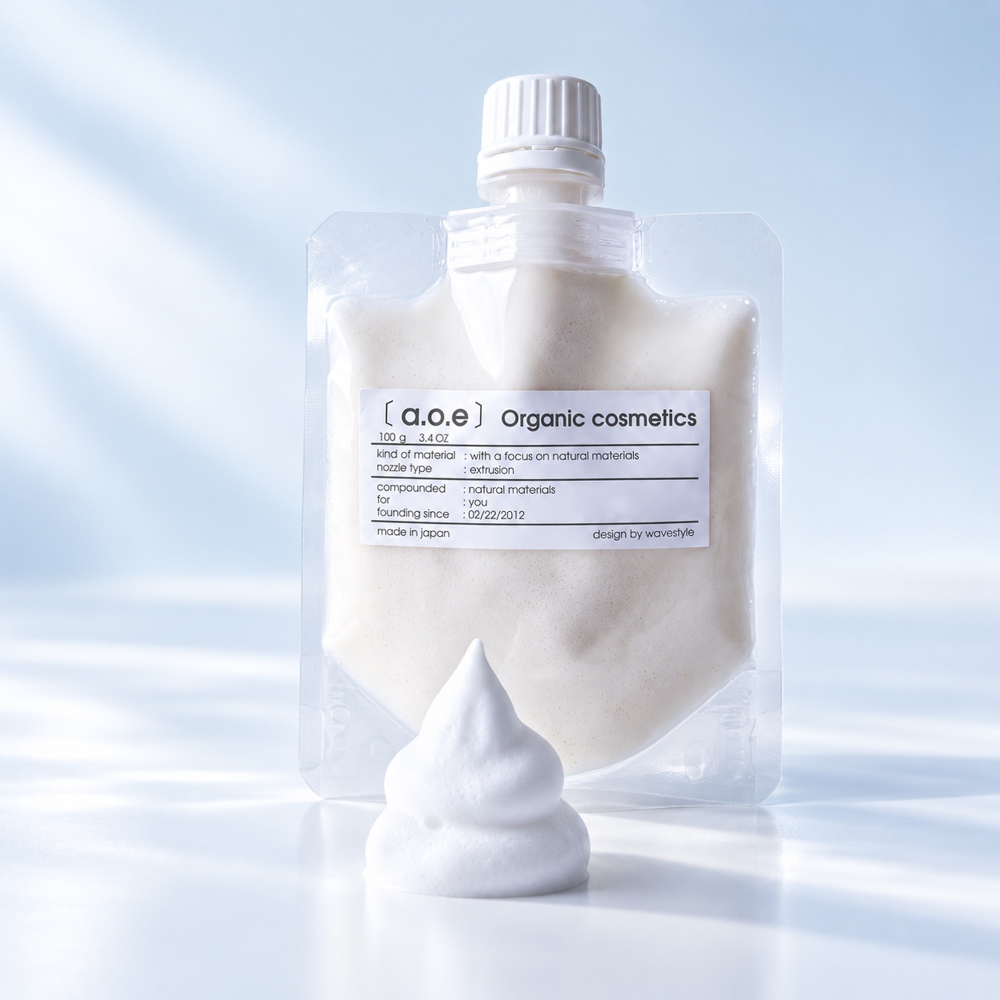

01 / 洗う100 g / ¥2,590（税込）
Boost Facial Wash
保湿成分のハトムギ種子エキスに、カオリン・ベントナイト・海シルトなどのクレイを組み合わせた泡洗顔料。ネットで泡立てたしっかりとした泡で、顔全体を包み、余分な皮脂や汚れを洗い流します。毎日の洗顔に加え、公式では泡パックとしての使い方も紹介されています。
PINKは乾燥・混合・普通肌、BLUEは年齢に応じたケア、YELLOWは皮脂や毛穴汚れへの関心から選べる3タイプ。配合成分の由来・原産国・用途も公開されているため、使用感だけでなく中身を確認して選びたい方にも。